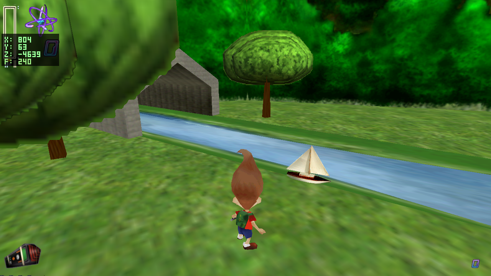
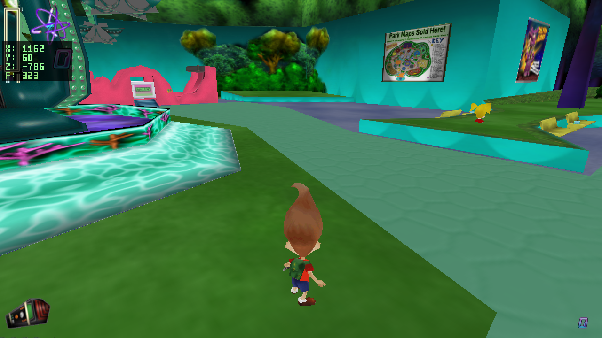

Summary page · 2026-06-25 · branch native-port. This page covers the follow-up after the behavior-lens close-out: closing the level1 sailboat float, documenting the incomplete level3d Cindy path/location work, updating the handoffs, and deploying the refreshed web build.
The next recommended track was motion/path fidelity. It closed #5, where the level1 sailboat floated above the river. #4 remains incomplete: Cindy is still not in the correct location, even though one native-only patrol-loop mismatch was found and corrected.

Added a narrow water_surface_at() helper that scans static placements named ncwater*. Static placement meshes draw at authored X, flipped Z, and world Y=0; their water height is baked into the mesh vertices. The helper uses each water mesh's draw-space X/Z bounds and local max-Y surface, then 3SAI draws with SailBoat.glb's local min-Y placed on that surface.
PositionY=17. This is a visual seat correction, not a gameplay rewrite.The previous handoff said the sailboat also patrolled off the river. That was based on water placement centers, not mesh extents. The corrected audit shows the whole authored route is inside the river mesh.
| Evidence | Value |
|---|---|
ncwater draw-space bounds | X -4419.5..11706.0, Z -7296.8..-2524.6, surface Y -11.25 |
SAILBOAT1 spawn | (458.2, 17.0, -4838.5) |
| Patrol chain | BOAT2 -> boat3 -> boat4 -> boat5 -> boat6 -> boat7 -> WAIT |
| Farthest reported point | boat7 (11144.6, -5635.7), still inside ncwater |
The level3d Cindy row authors a short terminal route: c1 -> c2 -> none. Native Cindy reused the generic patrol config with loop_to_start=1, so after reaching c2 it synthesized a return to c1. That made Cindy ping-pong through a path the data did not author.
vt_cindy now sets loop_to_start=0. Routes that should loop already say so in the authored data, for example level4's CINDY7 -> CINDY1. Routes ending in none now terminate.

| Output | URL | Status |
|---|---|---|
| Browser demo | /jn-engine/ | live jnengine.aef9117b.js, assets 63737d29 |
| This summary | /jn-engine/qa/native-port-motion-path-2026-06-25/ | published |
| Updated campaign ledger | /jn-engine/qa/native-port-behavior-coverage-2026-06-24/ | updated #5 closed, #4 deferred |
make bash tools/qa_shot.sh /tmp/l1_boat_anchor_after.png 458 17 -4840 1300 140 -4350 level1 400 QA_WARMUP=900 bash tools/qa_shot.sh /tmp/l3d_cindy_loop_after.png 858 5 -389 1250 150 -900 level3d 500 python3 tools/audit_faithfulness.py make web python3 tools/qa_web_verify.py ./tools/deploy_wasm.sh
| Gate | Result |
|---|---|
| Native build | pass existing SDL2_mixer archive warning only |
| Aimed screenshot | pass sailboat seated on river |
| Cindy route screenshot | partial terminal route stops, but location remains incorrect |
| Route bounds audit | pass all BOAT2..boat7 waypoints inside ncwater |
| Faithfulness audit | pass 0 findings, 0 waived, 0 new across 35 levels |
| Web build | pass 387 MB asset bundle warning only |
| Browser QA | pass all 16 QA web checks passed |
| Public URL check | pass live page references jnengine.aef9117b.js |
| Path | Purpose |
|---|---|
docs/qa/qa_backlog_campaign_handoff.md | #5 closed; #4 marked incomplete/deferred; remaining open work updated |
docs/continuation_options.md | next recommendation moved to cutscene web testing |
docs/PROJECT_HISTORY.md | boat water-anchor checkpoint added; Cindy reopened; Goddard visual issue noted |
docs/qa/native-port-behavior-coverage-2026-06-24/ | public campaign page corrected to 18/24 |